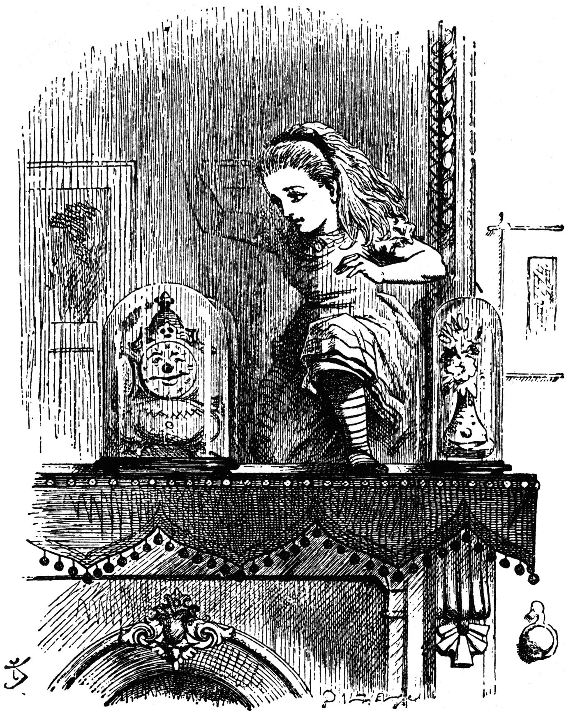

Image from Lewis Carroll's Through the Looking-Glass, which captures some of the strangeness of mirror
symmetry.
This is the webpage for a learning seminar on Gromov-Witten theory and related topics, including the moduli space of stable maps, the virtual fundamental class, and quantum cohomology. The seminar is organized by Arun Debray and Jonathan Lai.
Logistics: we'll meet Mondays at 11:00 AM in room RLM 11.176. In the seminar, we hope to spend some time on the construction of the moduli space of stable maps (about 3 lectures), the virtual fundamental class (about 3 lectures), a brief intoduction to mirror symmetry and Gromov-Witten theory for symplectic manifolds (2-3 lectures), quantum cohomology and applications to enumerative geometry (4 lectures), and possibly some connections to physics (1 lecture).
Lecture notes for this seminar can be found here.
Schedule:
January 22, 2018: organizational meeting
January 29, 2018 (Jonathan): Stable maps and quantum cohomology [FP96]
February 5, 2018 (TBD): Moduli space of stable maps?
February 12, 2018 (Yixian): Moduli space of stable maps?
February 19, 2018 (Sebastian): The virtual fundamental class?
February 26, 2018 (TBD): The virtual fundamental class?
March 5, 2018 (TBD): The virtual fundamental class and derived algebraic geometry?
March 12, 2018: spring break, no talk
March 19, 2018 (Arun): TBD
March 26, 2018 (TBD): TBD
April 2, 2018 (TBD): TBD
April 9, 2018 (TBD): TBD
April 16, 2018 (TBD): TBD
April 23, 2018 (TBD): TBD
April 30, 2018 (TBD): TBD
Some references:
[FP96] W. Fulton and R. Pandharipande, “Notes on stable maps and quantum cohomology.”
Related links: more references are posted in the Slack channel.
If you'd like to be on the email list, please send me an email.